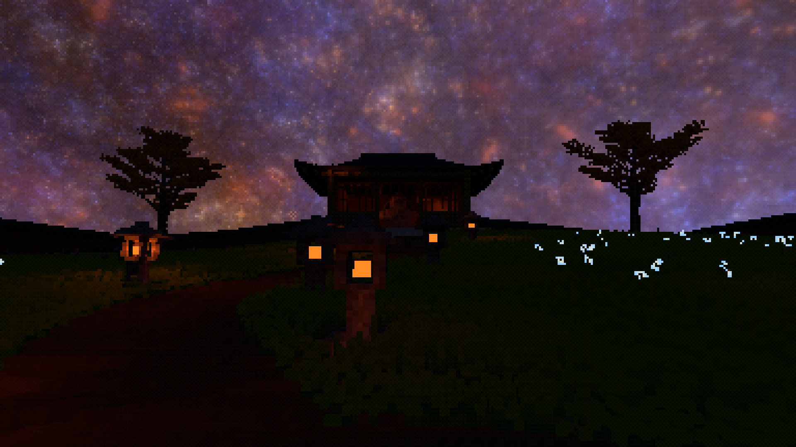
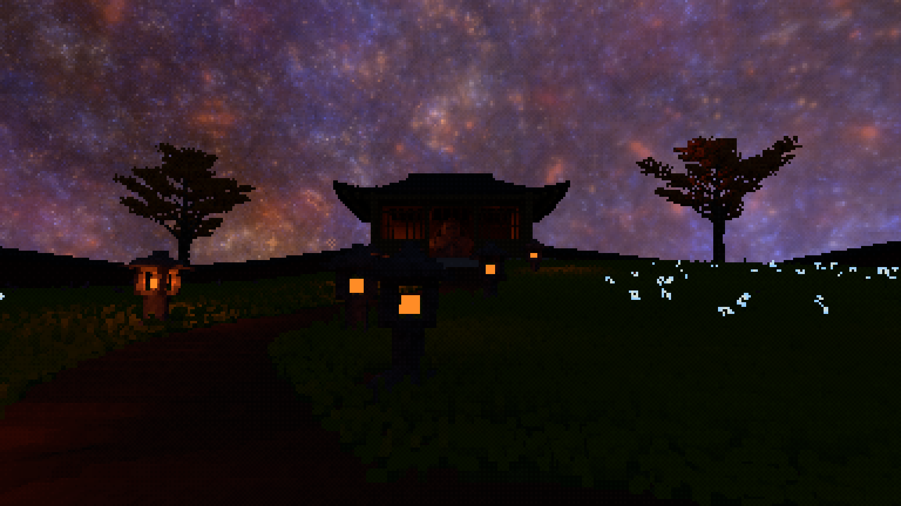

八灯 · 草准备 GPU
−42.9%
13.335 → 7.613 ms
实际 FPS：25.54 → 30.91
提升约 21.0%
调研路线已经接入真实渲染器：共享光源候选，在实际草茎接收点重新加权，只追踪选中的连接。保留有限光源、原有遮挡与间接光，不再用粗照度场替换近灯细节。


点击查看原始 1920×1080 PNG。两次独立 Release 运行，庭院视角、种子、夜间时间、灯预算与探针间距相同；没有调色、曝光修改或图像降噪。风、模拟与 DDGI 收敛进度并未冻结，房屋／树木的差异不能全部归因于 RIS。此组截图是候选展示，不是逐像素差分或视觉验收。
13.335 → 7.613 ms
实际 FPS：25.54 → 30.91
提升约 21.0%
25.003 → 8.029 ms
实际 FPS：18.03 → 28.38
提升约 57.4%
每个接收点、每次准备
不是选中一盏灯后再追十二次。
默认共 32 次便宜的候选评估。
相同比例尺。RTX 3060 Ti／Linux Vulkan，物理 1920×1080，场景 384×216，garden-arrival，seed 20260519，时间 0.95，DDGI 间距 32。每组 3 对交错、每次 20 秒；草准备含现有姿态复用与环境着色，并非只有 RIS 算法。取末尾 8 秒 GPU 中位数，再取三次运行的中位数；每次保留 145–248 个 GPU 样本。原路径关闭两种实验，RIS 测量不加载审计。十九灯由提高上传预算后真实选择获得，不是仍只上传八灯的“多物体”场景。
| 实际上传灯数 | 原路径 · 整段 FPS | RIS · 整段 FPS | 口径 |
|---|---|---|---|
| 8 | 25.72 | 30.97 | 从第一个性能日志帧计数到最后一帧，包含运行中发布／更新，不包含进程启动和资源加载。 |
| 19 | 18.50 | 28.52 |
八灯全部运行数据 · 十九灯全部运行数据。这是本机证据，不套用论文数字，也不代表 Apple GPU／MoltenVK 性能已通过。
4096 槽整数分布，按功率分配并保留均匀底额。每槽记录光源和真实概率倒数；工作组共享候选。
全局提议表 32 KiB。灯变化时随 live 上传更新，无额外 DDGI 探针或空间照度网格。
用实际世界坐标、草的法线、距离衰减与有限发光面响应加权，流式选择少量最终样本。
零贡献候选仍计入归一化，不枚举所有灯。有限光源仍采原有十二个积分点中的一个。
只查询选中样本的有限线段；复用原有 opaque／Glass 传输语义，再作 RIS 权重补偿。
没有上一帧 reservoir、屏幕历史、降噪器或失败后全灯回退。原路径只用于显式 A/B／旁路审计。
数学期望恢复原来的离散积分，并不意味着单个确定性画面精确。当前固定散列让静态接收点避免每帧重新撒噪；共享候选会相关，镜头剔除分组变化仍可能改变颗粒。详细推导、来源和这些限制记录在研究笔记。
独立的旁路 GPU 程序抽取实际接收点，读取正常快核结果，重算相同 RIS 并另算全灯参考。四组均为零非有限记录、零正常核输出失配，而不是只比较没有照明的零值。
| 灯数／种子 | 末 4 秒接收项检查 | 聚合 RGB 有符号误差 | 正常核失配 |
|---|---|---|---|
| 8 · 默认庭院 | 717,734 | 约 −0.014% | 0 |
| 8 · 种子 7 | 710,094 | 约 +0.553% | 0 |
| 19 · 默认庭院 | 618,231 | R +0.639% / G +0.611% / B −0.157% | 0 |
| 19 · 种子 7 | 625,036 | 约 −2.56% ～ −2.59% | 0 |
检查数包含跨帧重复、相关的接收点；不是独立样本数，也不是置信区间。聚合能量误差可能抵消局部亮暗偏差，不能代替近灯、风与运动视觉审查。八灯审计数据 · 十九灯审计数据 · 原生日志摘录。
最初新提议表误用了树单元的 descriptor binding。启动能过，CPU 数学测试也过，但草的直射光全为零。
实际输出审计发现后，移到空闲 binding，并加入真实 SPIR-V 的资源唯一性、正常／审计隔离与只读检查。这里没有拿那版“很快的零照明”当性能结果。
原生生命周期夹具依次实际接收 1／2／4／8／16／32／64／0 盏灯，原模式与 RIS 模式都完成最终移除和 DDGI 发布，零混合修订。
该夹具几乎没有草，约 1 µs 的草缓存范围不构成六十四灯草性能证据。代表性大灯数草地仍待补。真实计数
cargo fmt --check、cargo check、Release 构建通过；没有手改生成文件。sprinkler_contact_contracts 失败，前 48 个通过。已从原始基线 6386b512 单独编译运行，复现相同 failures=1；没有修改喷头来制造全绿。后续如果分布更广、全局功率候选命中率下降，再让 ReGIR 提供更好的空间提议；如果需要更平滑的低采样画质，再单独设计历史／降噪接口。不把“RIS 已接通”改名为“完整 ReSTIR 已完成”。
不勾选：原路径；勾选：实验路径。若想比较纯原始路径，请把独立的 Source Visibility Cache 也保持关闭。RIS 开启时优先于旧缓存。
默认 4 条连接 × 每条 8 候选。两项质量预算和 GPU 灯数预算都使用统一保存设置；当前均保留原默认值、RIS 关闭。未自动启动可见游戏。
cargo build --release
node scripts/validate-light-ris.mjs --case perf --output target/ris-perf-new
node scripts/validate-light-ris.mjs --case perf --light-budget 64 --output target/ris-many-new
node scripts/validate-light-ris.mjs --case audit --output target/ris-audit-new
node scripts/validate-light-ris.mjs --case audit --light-budget 64 --output target/ris-audit-many-new
node scripts/validate-light-ris.mjs --case scaling --seconds 90 --output target/ris-scaling-new
node scripts/validate-light-ris.mjs --case capture --output target/ris-captures-new脚本要求输出目录不存在，临时改配置后恢复原始字节。请不要和其他 app／GPU 工作同时运行。性能倒退会保留并显示为 performancePassed=false，不以此阻止视觉候选展示；运行／正确性错误仍会失败。
本报告全部测量、审计与截图使用的 Release SHA-256：
2cdd6e7f31b0b39a3e914afde96bdb9647f372e2264101f3838a49cdfae2f0e4